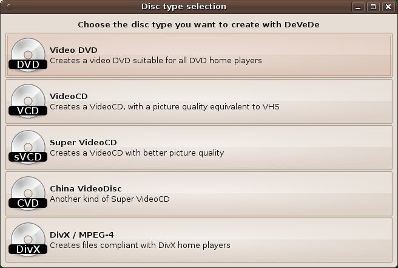

DeVeDe, a video DVD creator
Up: help index
Next: the main window
The selection window

When you launch DeVeDe, it will show you this window, asking what kind of disk you want to create.
You can choose between:
- Video DVD: a classic video DVD, like the ones you rent in your videoclub or buy in your video shop.
- VideoCD: a CD with CBR MPEG-1 video at a resolution of 352x240 pixels (352x288 with PAL), a fixed bitrate
of 1152 kbits/second for video and 224 kbits/second for audio. The quality is comparable to analog VHS,
and a CD can contain as much compressed audio/video than uncompressed audio (this is, a 80-minutes CD
can contain about 80 minutes of compressed video/audio). Is compatible with all DVD players, but video
quality is medium-bad.
- Super VideoCD: a CD with VBR MPEG-2 video at a resolution of 480x480 pixels (480x576 with PAL) and
video bitrates between 500 and 2600 kbits/second. The quality is comparable to LaserDisc, and a 80-minutes CD
can contain about 60 minutes con compressed video/audio (more if you reduce the bitrate, but with less
quality). Is compatible with a lot of DVD players, but maybe there is one very cheap which doesn't support it.
Video quality is good.
- CVD (China Video Disk): identical to Super VideoCD, but with a resolution of 352x480 pixels (352x576
with PAL). Offers less artifacts with same bitrate, but image is a bit less sharper than Super VideoCD. Is
compatible with a lot of DVD players, but maybe there is one very cheap which doesn't support it.
- DIVX/MPEG4: creates one-pass DIVX files, ready to be played in DIVX-compliant players.
Of course you aren't limited to theses options, since you can choose, if you want, another resolution
for your CD/DVD. This allows you to create Super VideoCDs with a resolution of 352x240 (or 352x288 for PAL),
which is a very good compromise if you want to store a lot of video in a single CD. I don't recomend to use
other resolutions with VideoCDs, because CBR MPEG-1 is very limited. Choose the Super VideoCD or CVD option
(which uses VBR MPEG-2) and use there the resolution you want.
Up: help index
Next: the main window